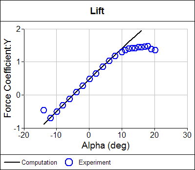

Lift Force and Drag Force
Airplanes defy gravity. Formula 1 racing cars corner at incredible speeds generating lateral forces up to 4.5 times that of gravity. Yachts can circumnavigate the globe by wind power alone. These incredible feats are all due to the lift force generated by airfoils moving through air. Of course nothing comes for free; for lift, the cost is drag.
Affordable Lift and Drag Calculations Available Now
Are you ready for a 30-day free trial of Caedium Professional?

Lift
Lift, or downforce as its known in the motor racing world, is the force generated perpendicular to the direction of travel for an object moving through a fluid (gas or liquid). The same effect occurs when a fluid moves over a stationary object, such as an airfoil in a wind tunnel. Airfoils are the most efficient shapes found so far that can generate lift while at the same time minimizing drag.
Drag
Drag is an unavoidable consequence of an object moving through a fluid. Drag is the force generated parallel and in opposition to the direction of travel for an object moving through a fluid. Drag can be broken down into the following two components:
- Form drag (or pressure drag) - dependent on the shape of an object moving through a fluid
- Skin friction - dependent on the viscous friction between a moving surface and a fluid, derived from the wall shear stress
The form drag for a 3D wing also includes the induced drag, which is generated at wing tips when high-pressure air from the lower wing surface is driven by a favorable pressure gradient (high to low) around to the low-pressure air on the upper surface, producing wing-tip vortices.
 Wing-Tip Vortex Evident in Wake for Panel Method Calculation
Wing-Tip Vortex Evident in Wake for Panel Method Calculation
These vortices are sometimes visible as water-vapor trails on humid days, especially during the high-lift conditions when jetliners take-off and land. End plates on racing car wings and winglets on airplanes help reduce the strength of wing-tip vortices and thus reduce the induced drag.
Lift and Drag Coefficients
Lift and drag vary according to the angle an airfoil makes with its direction of travel through a fluid. This angle is known as angle of attack, angle of incidence, or alpha. In evaluating an airfoil it is common to perform an alpha sweep that records the lift and drag of an airfoil at various angles. The lift and drag are usually plotted as dimensionless quantities.
Lift Coefficient Comparison Between Computation and Experiment
The dimensionless lift coefficient and drag coefficient are defined as:
L = CL . A . qinf
D = CD . A . qinf
where:
L is the lift force
CL is the dimensionless lift coefficient
D is the drag force
CD is the dimensionless drag coefficient
A is a reference area, usually the plan area (maximum projected area onto a plane) of an airfoil or wing
qinf is the free stream fluid dynamic pressure from Bernoulli's equation:
qinf = 1/2 rhoinf . Vinf2
where:
rhoinf is the free stream fluid density
Vinf is the free stream fluid speed
The plan area is used to calculate the drag coefficient only for airfoils. For all other shapes, such as cars, the reference area is the frontal area of the shape projected onto a plane normal to the flow direction.
Numerical Calculation of Total Force
Lift and drag forces in a wind tunnel experiment are measured directly using balances. For numerical techniques that produce the forces at discrete locations on a mesh, the total force is obtained by summing the forces at all mesh elements. The force on a single mesh element is defined as:
Fi = (pi . ni + taui) . Ai
where:
pi is the pressure at the center of the element
taui is the wall shear stress at the center of the element
Ai is the element area
ni is the element normal direction
i is the ith element
Assuming the flow is aligned with the z-direction, the total force is resolved into lift and drag force components as:
L = Fy . cos(alpha) - Fx . sin(alpha)
D = Fx . cos(alpha) + Fy . sin(alpha)
where:
L is the lift force
D is the drag force
Fx is the force in the x-direction
Fy is the force in the y-direction
alpha is the angle of attack
Feedback
Questions? Ideas? Problems?